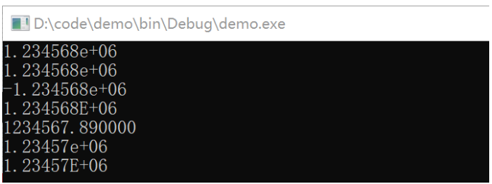
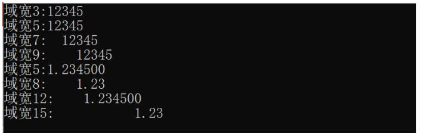
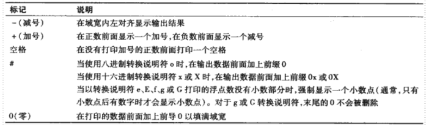
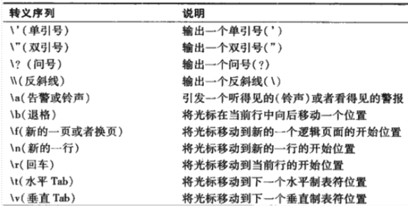
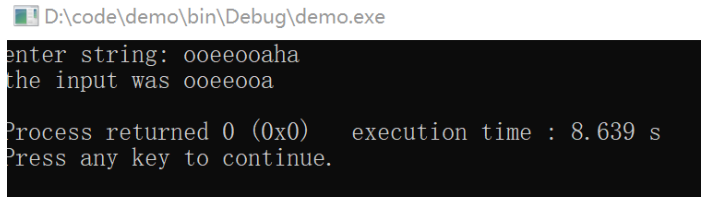
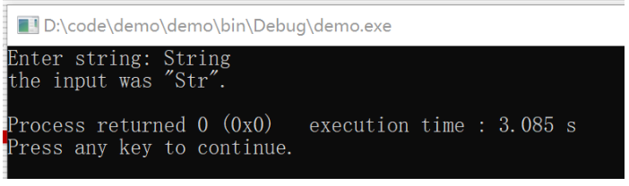
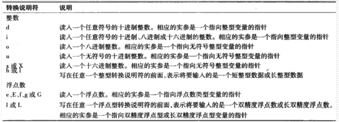
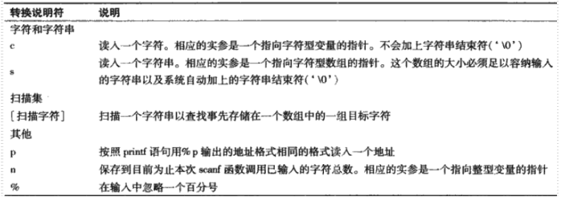

格式化输入和输出¶
本章大纲¶
- 流的概念
- 输入/输出流的使用
- 格式化输入/输出功能
流¶
概念：按行组织的字符的序列。每一行包含零个或多个字符并以一个换行符结束。
- 输入：外部设备→内存
- 输出：内存→外部设备
外部设备：键盘、硬盘、网卡、打印机、显示器
三个标准流：程序自动链接
- 标准输入流：默认链接到键盘
- 标准输出流：默认连接到显示器
- 标准错误流：默认连接到显示器
printf
可以实现精确的格式化输出
- 将浮点数的小数部分按指定的位数输出
- 按小数点位置对齐输出一列浮点数
- 输出数据的左对齐和右对齐
- 在输出的一行中的指定位置插入文本字符
- 用指数形式表示浮点数
- 用八进制和十六进制表示无符号整数
- 用固定的域宽和精度来显示各种类型的数据。
用法：
printf(格式控制字符串，实参）；
- 格式控制字符串描述的是输出格式，由转换说明和文本字符组成。
- 转换说明由字符%开始，以一个转换说明符结束。二者之间可选择性地加上标记、域宽、精度等, 如：
- printf(“产品单价是：%-4.2f”, 6.2754 );
- 一个格式字符串中可以有多个转换说明。其他实参诸个对应一个转换说明, 如：
- printf(“%d%-4.2f”, 4, 6.2754 );
**整数**的各种转换说明符
- d : 按有符号十进制整数显示。
- i ：按有符号十进制整数显示。
- o ：按有符号八进制整数显示。
- u ：按无符号十进制整数显示。
- x或X ：按无符号的十六进制整数显示。
- h或l ：位于任意一个整数转换说明符的前面，分别表示将要显示的是一个短整数或长整数。
**浮点数**的各种转换说明符
- e或E : 以指数形式显示一个浮点数。
- 采用四舍五入方式. 小数点前仅仅打印一位数字
- 默认状态（%e或%E）输出六位小数
- e : 输出小写e. 如：1.24e+004
- E : 输出大写E. 如：-3.450E-003
- f ：以小数点位置固定的形式显示一个浮点数。
- 采用截断方式。小数点前至少有一位数字。
- 默认状态（%f）输出六位小数
- g或G ：根据数据的绝对值大小，采用f浮点形式或者e(或E)指数形式显示一个浮点数。
- 不带末尾0.
- 采用四舍五入方式
- 幂值小于-4或大于等于指定的精度（如大于等于6）时采用指数格式，否则采用f格式。
- L ：放置在任意一种浮点数转换说明符前面，表示要打印的是一个长双精度型(long double)的浮点数。
| C | |
|---|---|
1 2 3 4 5 6 7 8 9 10 11 | |

**字符**或字符串转换说明符
- c ：打印单个字符
- s ：打印一个字符串
**字符**或字符串转换说明符
- c ：打印单个字符
- s ：打印一个字符串
其他的转换说明符
- p : 显示一个指针的值（十六进制表示）
- %：显示一个百分号
域宽和精度
数据打印区域的精确大小可以用域宽来说明。
- 域宽可以与所有的转换说明符一起使用。如： %3d
- 当数位小于域宽时，右对齐打印。若大于域宽，按实际位数打印。
printf函数允许指定打印数据的精度。
- 格式 ： .整型数 如 : .3d, .4f
- 与整数说明符一起使用时 ： 表示要打印的最小数字位数。
- %3d : 最少输出3位数字，不足三位的前面添空格
- %03d 或%.3d : 最少输出3位数字，不足三位的前面添0
- * 与浮点型转换说明符e、E或f一起使用时 ： 表示小数点后面的数字位数。
- * 与浮点型转换说明符g或G一起使用时 ： 表示有效数字的最大位数。
- * 与字符串转换说明符s一起使用时 ：表示要从字符串中打印出来的最大字符个数。
printf函数允许指定打印数据的精度。
- 格式 ： .整型数 如 : .3d, .4f
- 与整数说明符一起使用时 ： 表示要打印的最小数字位数。
- %3d : 最少输出3位数字，不足三位的前面添空格
- %03d 或%.3d : 最少输出3位数字，不足三位的前面添0
- * 与浮点型转换说明符e、E或f一起使用时 ： 表示小数点后面的数字位数。
- * 与浮点型转换说明符g或G一起使用时 ： 表示有效数字的最大位数。
- * 与字符串转换说明符s一起使用时 ：表示要从字符串中打印出来的最大字符个数。
* 例：以不同的域宽打印数值
* 编写一个程序，测试分别以不同域宽来输出整数12345和浮点数1.2345的打印结果。当打印域宽小于数值的位数时，会有什么结果？
| C | |
|---|---|
1 2 3 4 5 6 7 8 9 10 11 12 13 | |

在printf函数的格式控制字符串中使用标记
- 标记的作用 ：增加输出格式的控制功能
- 使用方法 ：在紧靠%的右侧写上标记
- %-3d %-4.2f
- 标记可以单独使用，也可以组合使用
- 标记分类
- 标记' -' : 在域宽内左对齐地显示输出结果
- 标记 '+' ：在整数前面显示一个加号，在负数前面显示一个减号
- 标记'空格'：在没有打印加号的正数前面打印一个空格。
- 标记'0'：* 在打印的数据前面加上前导0以填满域宽。

转义序列

scanf
读取格式化输入
- scanf语句的格式：scanf( 格式控制字符串，其余实参 ）；
- scanf函数的格式化输入功能
- 输入任意一种类型的数据
- 从一个输入流中输入指定的字符
- 忽略一个输入流中的字符
- 扫描集输入：
- 扫描集是位于格式控制字符串中以百分号开头、用方括号[ ]括起来的一组字符
- 扫描集扫描输入流中的字符，寻找与字符集中的字符匹配的字符
- 一旦遇到扫描集中没有的字符时，停止输入
例：寻找元音字母
| C | |
|---|---|
1 2 3 4 5 6 7 8 | |

逆向扫描集输入
- 通过逆向扫描集扫描那些没有出现在字符集中的字符。
- 一旦遇到扫描集中有的字符时，停止输入。
- 方法：在扫描字符的前面加一个脱字符号^
- 如：
%[^aeiou]
例子：查找辅音字母
| C | |
|---|---|
1 2 3 4 5 6 7 8 | |

输入指定数目的字符
- 通过指定域宽来从输入流中输入指定数目的字符。
- 如： scanf( “%2d%d” ,&x, &y );
- 若输入12345，则x = 12; y = 345;
- 忽略掉输入流中的特定字符
- 为了去除不需要的字符，可以将它们写在scanf的格式控制字符串中。
- 如： scand( "%d-%d-%d" , &month, &day, &year );
- 若输入10-26-2015，则month = 10; day = 26; year = 2015;
- 使用赋值抑制字符*去除不需要的字符。
- * 如： scand( “%d%*c%d %*c%d” ,&month, &day, &year );
- * 若输入10-26-2015，则month = 10; day = 26; year = 2015;
- * 若输入10/26/2015，则month = 10; day = 26; year = 2015;


章小节
- 所有的输入和输出都是针对流进行的。所谓流就是按行组织的字符的序列。
- 使用printf函数可以实现精确的格式化输出。
- 使用 scanf函数可以输入各种数据类型。